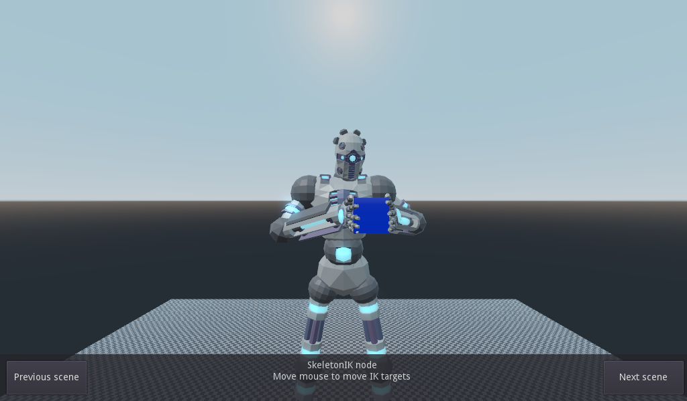
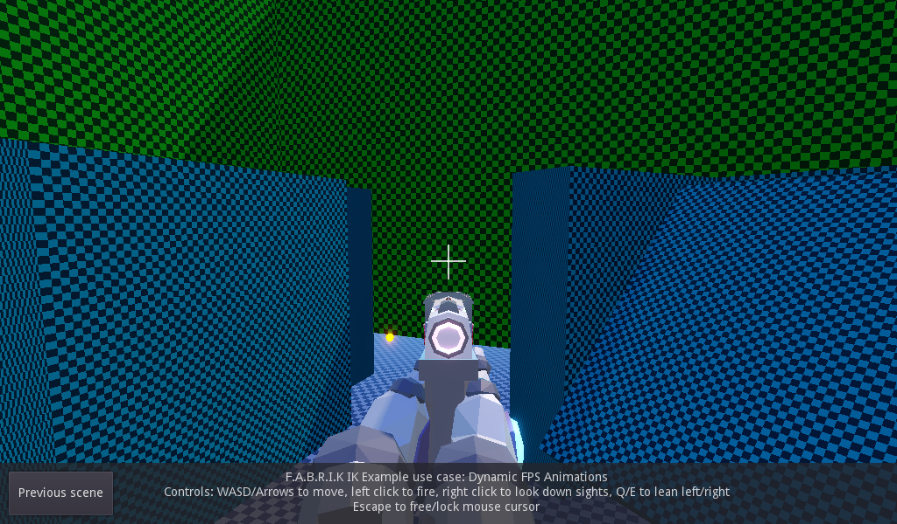
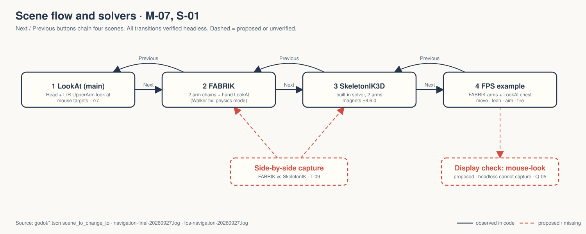
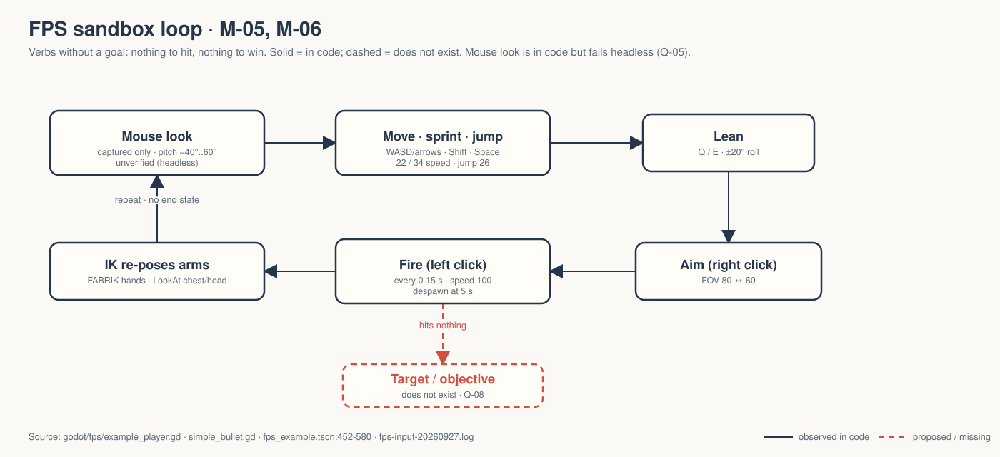

Four linked scenes pose the same robot rig with LookAt, FABRIK and Godot's built-in SkeletonIK3D, then put it in first person with a pistol.
OBSERVED INFERRED MISSING
Tech demo, not a game — even the FPS scene. gate — unsigned at time of writing. → GDD.md


OBSERVED godot/screenshots/cube.png, fps_gun.png — shipped with the Godot demo. No Walker footage exists.

Same rig, different solver; the use case comes last INFERRED

The scene's own label: "Example use case: Dynamic FPS Animations." fps_example.tscn:409
A first-person film opens on mouse-look. That is exactly the part nobody has seen work.
Q-01 film purpose · Q-02 pillars · Q-03 model provenance · Q-04 upstream the fix · Q-05 where to verify mouse-look · Q-06 hard-coded keys · Q-07 CORE · Q-08 FPS scene scope
Decide Q-08 now: the FPS sandbox stays a showcase, or it becomes a game with its own brief. Game-shaped verbs with no goal are how scope creep starts.